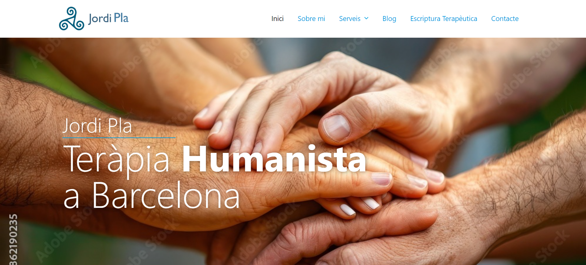

Experiencia Laboral
"Usa los botones para explorar
mi experiencia en tecnología y gastronomía."
Estoy listo para aportar valor como desarrollador full-stack. Con formación intensiva en desarrollo web y experiencia en AlternWeb, aplico mi capacidad de organización y enfoque en el trabajo eficiente para mejorar la experiencia de usuario y el rendimiento de los proyectos. Soy un trabajador comprometido que contribuye al éxito de cualquier equipo.
Busco una oportunidad en el desarrollo web para aportar valor desde el primer día. Actualmente, estoy cursando Fundamentos de la Programación con el objetivo de especializarme en PHP Full Stack. Estoy comprometido con mi crecimiento profesional y deseo contribuir al éxito de los proyectos en los que participe.
En paralelo a mis estudios, realicé prácticas laborales en AlternWeb, una empresa de digitalización que trabaja con WordPress. En esta experiencia profesional, trabajé en la creación, diseño y optimización de 4 sitios web (enlaces próximamente disponibles), donde me ocupé de mejorar su rendimiento en Google Insights y aplicar técnicas de SEO. Estas prácticas me permitieron comprobar mis capacidades para aportar valor en el sector, lo que se reflejó en una excelente carta de recomendación.
Al finalizar este CP3, decidí ampliar mis conocimientos con un módulo adicional de Diseño Web, donde me especialicé en el uso de CMS como WordPress, una herramienta muy valiosa para la creación y gestión de contenido web.
Decidí formalizar mi formación y en 2024 me inscribí en un Ciclo Profesional Nivel 3 (CP3) de Desarrollo de Aplicaciones Web en CIEF. Durante este ciclo, mejoré mis habilidades en Node.js, PHP, Bootstrap, MariaDB, MySQL, GitHub, Docker, utilizando como herramienta principal Visual Studio. Como parte de este curso, desarrollé mi primer proyecto freelance: la creación de la página web para la ONG CreArt (enlace próximamente disponible). Este proyecto no solo me permitió aplicar lo aprendido, sino también enfrentarme a las exigencias del mundo real del desarrollo web.
A medida que avanzaba, fui profundizando mis conocimientos con cursos adicionales sobre bases de datos, frameworks y otras tecnologías clave en el desarrollo web. Esto me permitió ampliar mi perspectiva y comprender mejor la arquitectura de aplicaciones más complejas.
Comencé mi camino en el desarrollo web de manera autónoma, enfocándome en aprender los fundamentos de JavaScript, HTML y CSS. Durante estos primeros meses, realicé diversos cursos cortos que me permitieron dar mis primeros pasos en el desarrollo web, aprendiendo las bases del diseño y la programación para crear páginas funcionales y atractivas.
Sobre mí
"Aquí encontrarás una breve descripción sobre mí
y mi perfil profesional como
desarrollador."
Desde hace un año, me he volcado al desarrollo web full-stack, especializándome en tecnologías como JavaScript, Node.js, PHP, HTML y CSS. Actualmente, trabajo en un proyecto Freelance como desarrollador full-stack en CreArt-ONG, donde aplico mi capacidad de organización y enfoque eficiente, adquiridos en la gastronomía, al mundo del desarrollo web, creando soluciones eficientes y de alta calidad.
Perfil
Nombre: Luis Alejandro Cortés Galán
Perfil: Junior Full Stack Developer
Telefono: 615053328
E-mail: Alejandro.cortes.bcn@outlook.com
Habilidades
Back-End(PHP, JavaScript, Node.js)
Front-End (HTML, CSS, JavaScript, Wordpress)
DataBases (MySQL, MariaDB, PhpMyAdmin)
Otros (Git, Github, Apache)
Proyectos
"Selecciona los botones para descubrir mis proyectos,
prácticas y experiencias educativas."

Jordi Pla, Psicologo

Wordpress,Elementor, CSS,
php y JavaScript.
Optimizacion de SEO, rendimiento con Google Insights, Diseño y Seguridad.
Carpienteria HoleWall
Wordpress,Elementor, CSS,
php y JavaScript.
Optimizacion de SEO, rendimiento con Google Insights, Diseño y Seguridad.
Stock Web
Wordpress,Elementor, CSS,
php y JavaScript.
Optimizacion de SEO, rendimiento con Google Insights, Diseño y Seguridad.
Zapateria Ander`s
Wordpress,Elementor, CSS,
php y JavaScript.
Optimizacion de SEO, rendimiento con Google Insights, Diseño y Seguridad.
Contáctame
"Si has llegado hasta aquí, ¡estás a un paso de hacer algo increíble!
Contáctame y hablemos sobre tus proyectos y oportunidades."
¡Estoy aquí para ayudarte!
¡Contáctame y hagamos cosas increíbles! Estoy abierto a proyectos freelance, colaboraciones sin ánimo de lucro y nuevas oportunidades laborales. ¡Estoy listo para empezar!
Teléfono / What`s App +34 615 05 33 28
E-mail: wincho_04@hotmail.com
¡Espero saber de ti pronto!